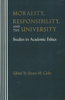

Critically investigating crucial moral issues generated by academic life
Critically investigating crucial moral issues generated by academic life


 Critically investigating crucial moral issues generated by academic life
Critically investigating crucial moral issues generated by academic life

|  |
Morality, Responsibility, and the UniversityStudies in Academic Ethicsedited by Steven M. Cahnpaper EAN: 978-0-87722-959-9 (ISBN: 0-87722-959-7) |
"[A] timely and important book.... These thoughtful essays surely will shape the debate about morality in higher education for years to come and provide guidance in the quest to improve the quality of campus Iife."
—Ernest L. Boyer, President, Carnegie Foundation for the Advancement of Teaching
This book, the first of its kind, consists of fourteen original essays by noted American philosophers critically investigating crucial moral issues generated by academic life. The authors ask: What are the standards of conduct appropriate in class-rooms, departmental meetings, and faculty meetings, in grading students, evaluating colleagues, and engaging in research?
"The need for appropriate, sustained, philosophical analyses and examinations of practical ethics dilemmas in academic life undoubtedly is required since the reporting of questionable conduct alone does little to resolve the problem. This book of essays provides a vehicle for beginning this sustained investigation."
—Betty A. Sichel, Long Island University
"The essays address neglected matters which not only should, but I believe will, be of interest to academics...and perhaps a few administrators, which would be a very good thing indeed."
—Hans Oberdiek, Swarthmore College
Introduction – Steven M. Cahn
1. Human Rights and Academic Freedom – Alan Gewirth
2. Free Speech on Campus – Judith Wagner DeCeu
3. Tenure Academe‘s Peculiar Institution – Andrew Oldenquist
4. Ethics in Academic Personnel Processes: The Tenure Decision – Rudolph H. Weingartner
5. The Research Demands of Teaching in Modern Higher Education – Theodore M. Benditt
6. The Truth, the Whole Truth, and Nothing but the Truth – Paul D. Eisenberg
7. The Ethics of Graduate Teaching – Robert Audi
8. Professors. Students, and Friendship – Peter J. Markie
9. Sexual Harassment in the University – Nancy ("Ann") Davis
10. Beyond in Loco Parentis? Parietal Rules and Moral Maturity – David A. Hoekema
11. Business-University Partnerships – Norman E. Bowie
12. Diversity within University Faculties – Alan H. Goldman
13. Academic Appointments: Why Ignore the Advantage of Being Right? – David Lewis
14. A Defense of the Neutral University – Robert L. Simon
About the Authors
Steven M. Cahn is Provost and Professor of Philosophy at the Graduate School of the City University of New York. He has also edited a collection of essays entitled Affirmative Action and the University: A Philosophical Inquiry (Temple).
Contributors: Robert Audi, Theodore M. Benditt, Norman E. Bowie, Nancy ("Ann") Davis, Judith Wagner DeCew, Paul Eisenberg, Alan Gewirth, Alan H. Goldman, David A. Hoekema, David Lewis, Peter Markie, Andrew Oldenquist, Robert L. Simon, Rudolph H. Weingartner, and the editor.
© 2015 Temple University. All Rights Reserved. This page: http://www.temple.edu/tempress/titles/670_reg.html.